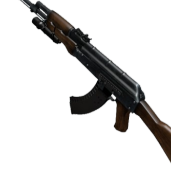
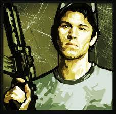
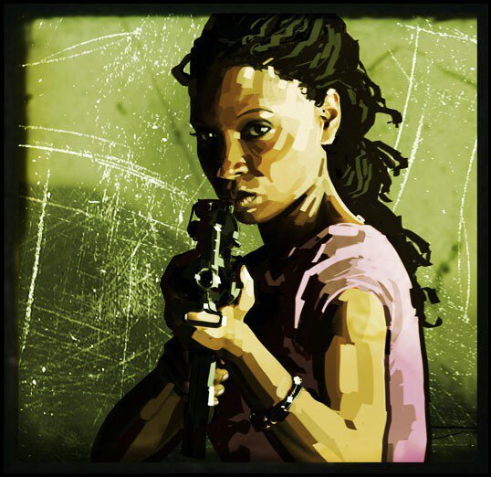
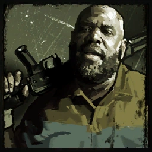

Los Sobrevivientes

Nick
Individuo con historial de delitos menores, acostumbrado a ganarse la vida mediante apuestas y fraudes de poca monta. Antes del brote se desplazaba de ciudad en ciudad, siempre esquivando la ley y viviendo de su astucia. Su perfil psicológico lo describe como desconfiado y cínico, reacio a colaborar y difícil de ganar en confianza. A pesar de ello, su capacidad de adaptación en entornos hostiles lo convierte en un elemento capaz de sobrevivir allí donde otros fracasan.

Ellis
Mecánico automotriz originario del sur de Estados Unidos, sin antecedentes judiciales ni historial problemático. De carácter optimista incluso en las situaciones más críticas, aporta al grupo una energía juvenil que mantiene la moral en alto. Su conocimiento técnico le permite improvisar soluciones con recursos limitados, aunque su tendencia a la distracción representa un riesgo constante en operaciones de alta presión.

Rochelle
Productora de televisión y reportera en ascenso que se encontraba cubriendo eventos mediáticos cuando comenzó la infección. Su personalidad orientada al liderazgo bajo presión le ha permitido mantener la cohesión y la moral dentro del grupo. Posee habilidades destacadas de comunicación y organización, lo que la convierte en un apoyo esencial en la toma de decisiones durante situaciones de crisis.

Coach
Entrenador deportivo de preparatoria especializado en fútbol americano, con amplia experiencia en motivación de grupos y disciplina física. Su fortaleza corporal lo posiciona como elemento clave en combates cuerpo a cuerpo y en tareas de resistencia prolongada. El perfil psicológico lo describe como un individuo protector, con fuerte sentido de responsabilidad hacia los demás, dispuesto a arriesgarse para garantizar la supervivencia del grupo.
Ninguno de los sujetos posee entrenamiento militar formal. Sin embargo, sus
habilidades
civiles,
sumadas a la necesidad de supervivencia, los han convertido en combatientes funcionales en el
terreno.
Se recomienda vigilancia constante: la presión psicológica y el
ambiente hostil
pueden
alterar la estabilidad del grupo.
Evaluación de Sobrevivientes
Sujetos identificados como inmunes a la infección viral. Aunque pueden portar rastros biológicos del
agente patógeno, no desarrollan los síntomas degenerativos que transforman al huésped en infectado.
Su inmunidad los convierte en recursos estratégicos: son capaces de atravesar zonas rojas sin
sucumbir a la plaga.
Inmunidad Comprobada
Exposición directa al agente en múltiples encuentros. Resultado: nula conversión. La sangre, saliva y fluidos de infectados no alteran su estado biológico. Se desconoce el origen de esta resistencia, pero es constante en los cuatro sujetos.
Eficiencia en Grupo
Aunque no poseen entrenamiento militar, su convivencia forzada ha generado patrones de cooperación efectivos. Han desarrollado tácticas de cobertura mutua, reparto de recursos y comunicación en combate. Esta sinergia les permite enfrentar hordas superiores en número.
Resiliencia Psicologica
La constante exposición a escenarios hostiles no ha quebrado su estabilidad mental. Ellis mantiene la moral con optimismo; Rochelle gestiona la coordinación y reduce tensiones internas; Coach funge como figura de liderazgo protector; Nick, pese a su cinismo, aporta cautela y desconfianza útil para evitar errores.
Adaptacion tactica
El grupo ha demostrado alta capacidad de improvisación: desde el uso de armas de fuego improvisadas hasta la explotación del entorno (barricadas, explosivos caseros, trampas). Esta adaptabilidad compensa la falta de entrenamiento formal.